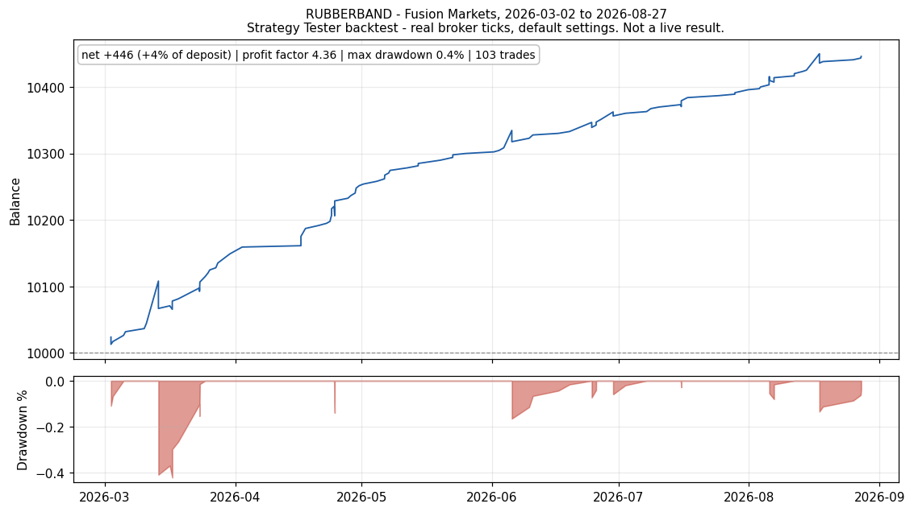
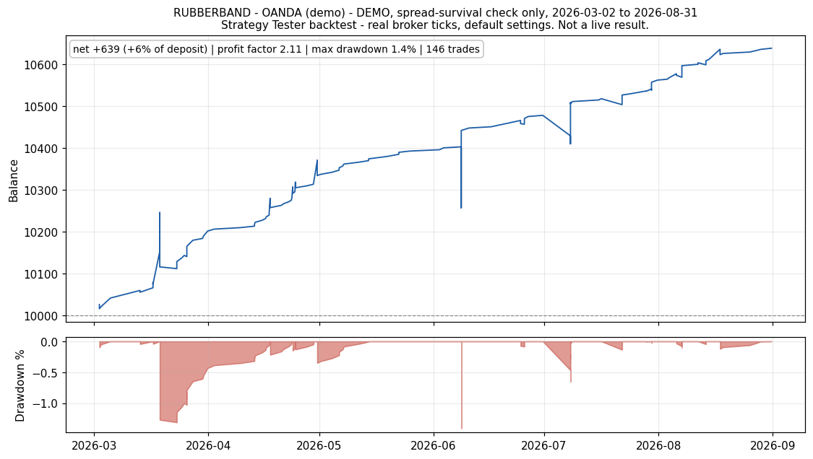
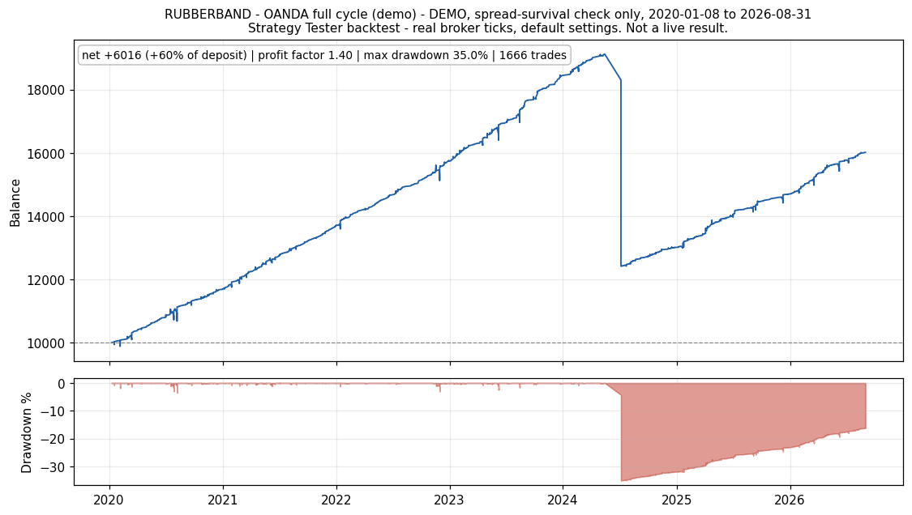
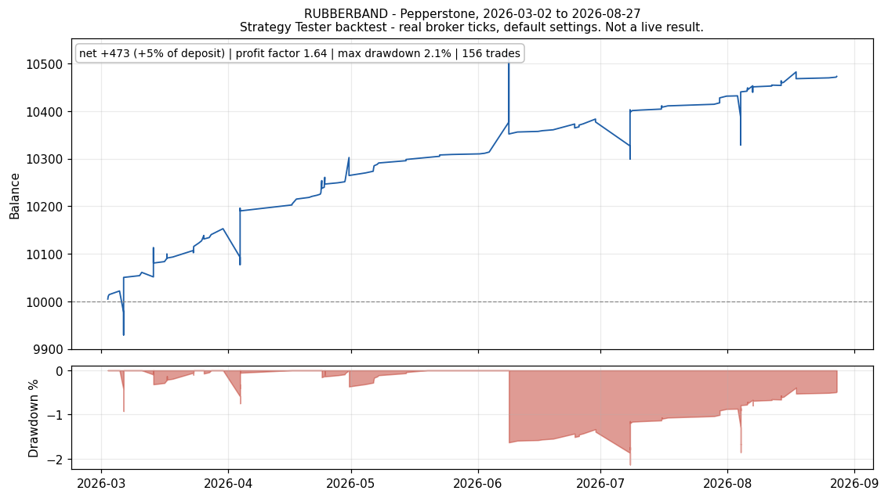
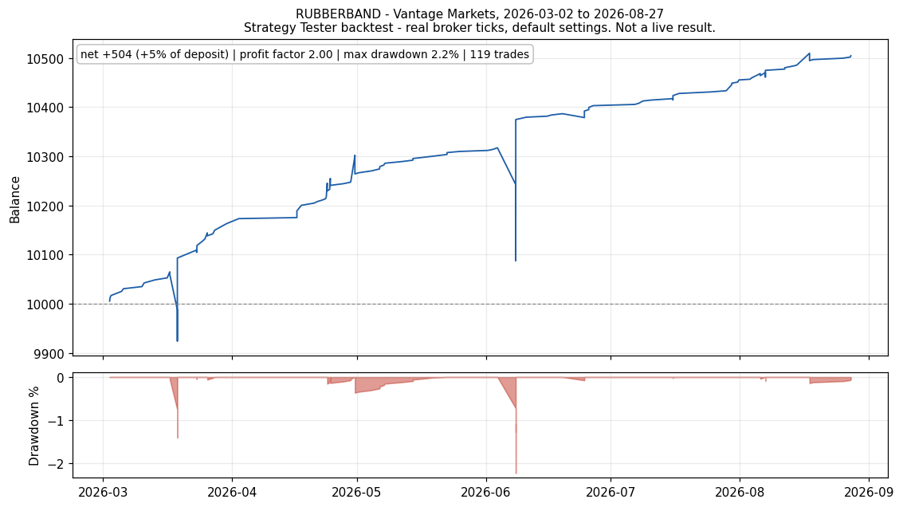
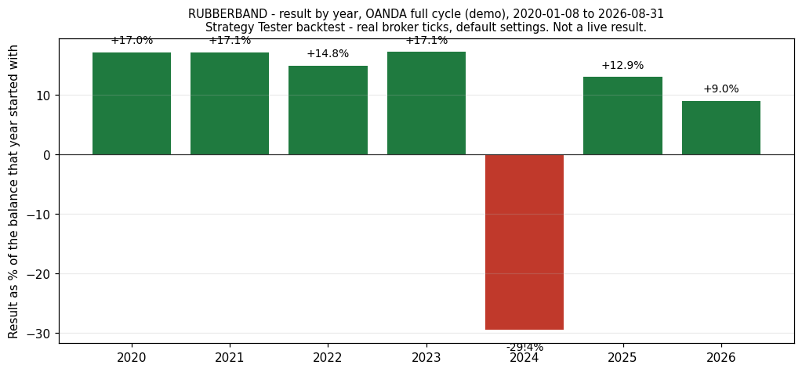
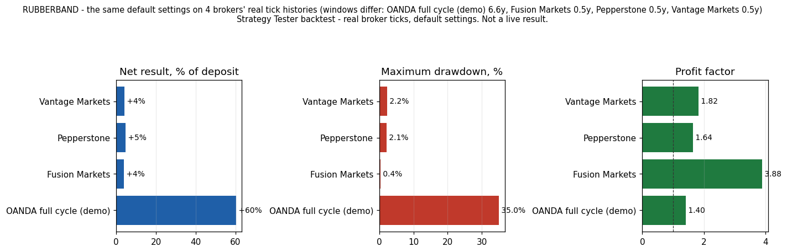
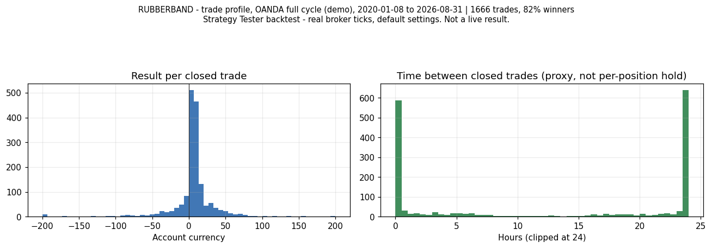

Rubberband
AUDCAD · M15 · MetaTrader 5 Expert Advisor · listed on mql5 as Aegis Meridian
Headline backtest
Profit factor 2.95 · worst equity drawdown 2.37% · 103 trades · return +3.8% on 10,000
Backtest, real ticks, Fusion Markets, 2026-03-01 to 2026-09-01, version 1.40. The weakest of the live brokers tested, not the strongest.

Figures on this page come from the MetaTrader 5 Strategy Tester on real broker ticks. They are backtests, not live results.
All figures below are BACKTEST results on real-tick history. Past performance is not indicative of future results.
Short description (the hook)
An adaptive mean-reversion grid for AUDCAD M15. It fades statistically over-extended price (a linear-regression channel z-score), averages a small equal-lot basket against the move, and closes the basket as price reverts to its mean. A live market-regime detector (trend-efficiency + volatility) re-tunes selectivity, grid spacing and the profit target for range, high-volatility and trending conditions — trading less and spacing wider exactly when a trend would otherwise hurt a grid. One risk knob scales everything from a conservative grind to maximum compounding, each with a matched survival guard.
Strategy overview (mechanism — no black box)
- Entry: fade only strong extensions — when price is far from its regression-channel mean (high |z|) and momentum is stretched, in the London/New-York window. Strong selectivity is the core edge (it trades ~half as often as a naïve grid).
- Recovery: equal-lot basket, adds a leg every N×ATR of adverse move (no martingale — every leg is the same size).
- Exit: the whole basket closes once it floats back to a small net profit (a fraction of ATR × basket volume).
- Regime adaptation (live, self-calibrating): a daily trend-efficiency + volatility-percentile classifier labels the market RANGE / HIGH-VOL / TREND and applies the setting bank optimised for each — in a trend it widens grid spacing and stops gating on efficiency, so the basket cannot over-stack; in range it tightens for frequent reversions.
- Survival: a tier-scaled account guard sits above each risk tier's normal floating range — it does nothing in normal operation and only acts as a catastrophe backstop.
Backtest performance — risk tiers
Symbol AUDCAD · Timeframe M15 · Model every-tick (real ticks) · Period 2022-01 → 2026-06 (~4.5 years) · Spread/commission broker-real. One strategy; the tier only scales position size + its matched survival guard.
| Risk tier | Balance-risk % | Recommended account | Net (period) | ≈ Annual | Profit Factor | Expected Payoff | Recovery Factor | Sharpe | Trades | Win % | Realised DD | Floating DD |
|---|---|---|---|---|---|---|---|---|---|---|---|---|
| LOW (conservative, default) | ~1.5 % | $500 | +41 % | ~7.9 %/yr | 2.40 | 0.18 | 3.44 | 3.89 | 1,113 | 81.1 % | 2.4 % | 9.7 % |
| MEDIUM (balanced) | ~3.0 % | $1,000 | +71 % | ~12.7 %/yr | 2.34 | 0.64 | 2.99 | 3.55 | 1,113 | 81.1 % | 4.3 % | 17.8 % |
| HIGH (aggressive) | ~4.5 % | $2,000 | +131 % | ~20.3 %/yr | 2.33 | 2.35 | 3.39 | 3.55 | 1,113 | 81.2 % | 5.8 % | 24.4 % |
| HOT (maximum) | ~6.0 % | $3,000 | +232 % | ~30.4 %/yr | 2.31 | 6.27 | 3.25 | 3.43 | 1,113 | 81.2 % | 8.0 % | 21.7 % |
Backtest, MetaTrader 5 Strategy Tester, OANDA AUDCAD.pro real ticks, 2022-01 to 2026-06.
Every tier was profitable in every calendar year of the test (2022, 2023, 2024, 2025, 2026-YTD), including the 2024 AUDCAD carry-shock and the 2026 trend. ~250 trades/year, 81 % win rate. Equity curve is a near-linear grind (R² 0.98–0.997). The regime-aware engine is highly selective in high-volatility conditions — fewer, higher-quality baskets — which is why the floating drawdown stays low (Sharpe ~3.4–3.9) while the return scales.
Minimum account: $300 (any tier — below this the broker minimum lot of 0.01 floats >15 % of a tiny account). The figures above use each tier's recommended account, where its sizing runs as designed. The risk tier is a free choice at any account ≥ minimum; position size compounds automatically with the balance.
+TURBO profiles (optional, high-risk / high-return) — conviction oversizing
Each tier also has a +TURBO variant in the Risk-Profile dropdown — the same confidence boost baked together with a hotter compounding tier. It keeps the tier's sizing but oversizes only the very-highest-confidence entries (a calm-market, extreme-stretch reversion that historically reverts in one leg ~76 % of the time). Same period:
Backtest, MetaTrader 5 Strategy Tester, OANDA AUDCAD.pro real ticks, 2022-01 to 2026-06.
| +TURBO profile | Recommended account | Net (period) | ≈ Annual | Profit Factor | Expected Payoff | Recovery Factor | Sharpe | Win % | Realised DD | Floating DD |
|---|---|---|---|---|---|---|---|---|---|---|
| MEDIUM + TURBO | $1,000 | +89 % | ~15.4 %/yr | 2.40 | 0.79 | 3.43 | 3.39 | 81.5 % | 4.1 % | 15.0 % |
| HOT + TURBO | $3,000 | +310 % | ~34.5 %/yr | 2.34 | 8.27 | 2.50 | 3.16 | 81.5 % | 6.2 % | 30.8 % |
(LOW+TURBO and HIGH+TURBO also exist in the dropdown.) Note MEDIUM+TURBO returns more than plain MEDIUM (+89 % vs +71 %) at a lower floating drawdown (15.0 % vs 17.8 %) — it scales up only the safest trades. The oversize is baked into the +TURBO profiles (×3, capped — higher is unstable); plain tiers leave it off, and only CUSTOM lets you set it manually. High-risk/high-return mode — larger floating drawdown; use with margin headroom.
Backtest, MetaTrader 5 Strategy Tester, OANDA AUDCAD.pro real ticks, 2022-01 to 2026-06.
How to read the two drawdowns (important)
- Realised drawdown (closed-trade balance dip) is tiny (2–8 %) because baskets revert and close in profit.
- Floating drawdown is the real risk dial — the deepest the open basket goes underwater before reverting (~10 % LOW → ~22–24 % HIGH/HOT, ~31 % HOT+TURBO). Choose your tier by the floating DD you can stomach, and keep margin headroom for it. Higher tiers compound faster but float deeper; this is the honest trade-off, not hidden.
Detailed tester statistics — backtest, OANDA AUDCAD.pro real ticks, 2022-01 to 2026-06 (MEDIUM tier - the default up to v1.38)
| Metric | Value |
|---|---|
| Total net profit | +$713 on $1,000 (+71 %) |
| Gross profit / Gross loss | $1,246 / −$534 |
| Profit factor | 2.34 |
| Expected payoff | 0.64 |
| Recovery factor | 2.99 |
| Sharpe ratio | 3.55 |
| Total trades | 1,113 (~250/yr) |
| Source | Backtest, OANDA AUDCAD.pro real ticks, 2022-01 to 2026-06 |
| Win rate | 81.1 % |
| Average win / average loss | $1.38 / −$2.54 |
| Largest win / largest loss | $15.92 / −$18.66 |
| Balance (realised) max DD | 4.3 % |
| Equity (floating) max DD | 17.8 % |
| Profitable months | 100 % |
Risk tiers & minimum accounts
One input — Risk Profile — sets the balance-risk %, position scaling and the matched survival guard: LOW ~1.5 % · MEDIUM ~3 % · HIGH ~4.5 % · HOT ~6 %. LOW is the default (v1.39) and the tier to start on. Absolute minimum $300 (any tier); the recommended account per tier (table above) is where that tier's sizing runs as designed. The position size compounds automatically with the balance, so a larger account simply scales the lots up.
CUSTOM hands sizing fully to you: set your own lot size (fixed lot) or your own balance-risk % (compounding, 1 % = 0.01 lot per $1,000) — your choice, no preset applied.
Requirements
- Symbol: AUDCAD · Timeframe: M15 · one chart.
- Account: hedging mode, low spread; VPS recommended (24/5 operation). Minimum balance $300.
- Default settings are baked in — runs out of the box at LOW (v1.39); the Risk Profile knob is the only input most users touch.
- Why LOW is the default (v1.39): on OANDA's 2020-2026 real ticks the MEDIUM tier once realised a basket loss at its 35 % breaker (May-July 2024); LOW carried the same basket inside a 13 % float and closed it without a loss. Higher tiers keep that risk.
Risk disclosure
Grid / averaging strategies carry recovery-basket risk: an open basket can float significantly underwater (see Floating DD per tier) before it reverts, and an extreme, non-reverting market move can cause large losses. Use only risk capital, respect the minimum account per tier, and keep margin headroom for the floating drawdown. Backtest results do not guarantee future performance. No result here is a live-account claim.
Backtest source: real-tick AUDCAD M15, 2022-01 → 2026-06, per-tier minimum-account deposit, broker-real spread.
How this differs from Boomerang
Both trade AUDCAD reversion, and they are different machines rather than one machine tuned twice.
- Entry. Rubberband fades a linear-regression channel z-score confirmed by RSI(14). Boomerang needs five conditions at once: position in the rolling eight-hour range, a Bollinger z-score, the direction of the previous bar, a four-bar return threshold and RSI(3).
- Adaptation. Rubberband runs a live four-state regime detector that re-tunes its entry threshold, its grid spacing and its profit target. Boomerang has no regime detector and uses fixed thresholds.
- Exit. Rubberband closes the basket on a regime-set target and can cap how long any one position is held. Boomerang's target decays with depth and age, and it retires its best winner against its worst loser.
- Depth and data. Fifteen legs reading M1, M5, M15, H1 and D1 here; five legs on one M5 chart there.
Evidence







